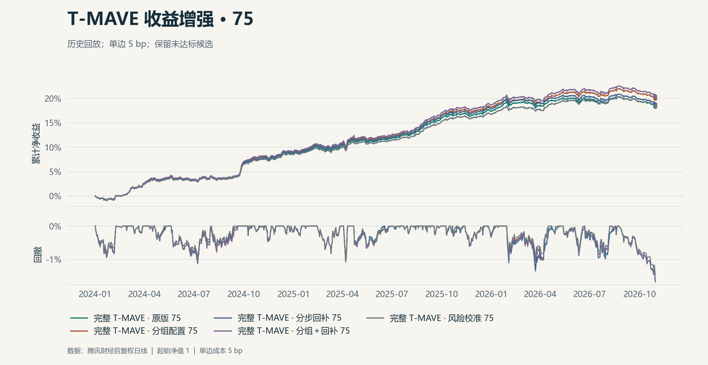
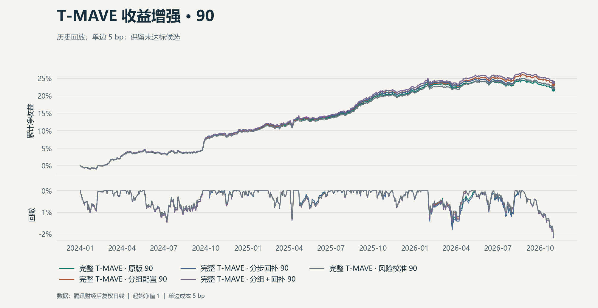

2026-11-16 18:28 北京时间。行情截止 2026-10-30。2024–2026 是已查看历史回放，独立期为 0 个交易日。
在开发期选择候选，回放只作复核。收益提高 0.3 个百分点且波动、最大回撤深度和 CDaR 均不恶化，5/10 bp 都需满足；25 bp 为成本压力。现金利息仅为假设情景。
| level | development_choice | retained_policy | candidate_count | development_pass_count | status |
|---|---|---|---|---|---|
| 75 | full_75 | full_75 | 5 | 0 | retain_baseline |
| 90 | full_90 | full_90 | 5 | 0 | retain_baseline |
| strategy | cagr | annual_vol | max_drawdown | cdar95 | mean_cash_weight |
|---|---|---|---|---|---|
| full_75 | 6.41% | 2.38% | -1.67% | 1.08% | 14.78% |
| full_90 | 7.54% | 2.92% | -2.17% | 1.41% | 11.16% |
| budget_60 | 9.08% | 4.90% | -5.33% | 3.63% | 0.00% |
| full_split_half_75 | 6.68% | 2.38% | -1.68% | 1.06% | 14.65% |
| full_split_75 | 6.94% | 2.40% | -1.68% | 1.05% | 14.51% |
| full_recovery_75 | 6.58% | 2.41% | -1.68% | 1.10% | 14.47% |
| full_combined_75 | 7.12% | 2.43% | -1.68% | 1.06% | 14.19% |
| ewma_split_75 | 6.90% | 2.43% | -1.72% | 1.09% | 14.39% |
| fixed_split_75 | 6.91% | 2.39% | -1.68% | 1.04% | 14.59% |
| trade_split_75 | 6.86% | 2.39% | -1.68% | 1.05% | 14.54% |
| full_split_half_90 | 7.78% | 2.91% | -2.17% | 1.39% | 11.05% |
| full_split_90 | 8.03% | 2.91% | -2.18% | 1.37% | 10.94% |
| full_recovery_90 | 7.71% | 2.97% | -2.18% | 1.45% | 10.73% |
| full_combined_90 | 8.22% | 2.96% | -2.18% | 1.39% | 10.51% |
| ewma_split_90 | 7.98% | 2.95% | -2.21% | 1.40% | 10.79% |
| fixed_split_90 | 7.91% | 2.91% | -2.16% | 1.37% | 10.95% |
| trade_split_90 | 8.02% | 2.91% | -2.18% | 1.37% | 10.91% |
| full_riskcal_75 | 6.46% | 2.18% | -1.49% | 0.93% | 16.06% |
| full_riskcal_90 | 7.74% | 2.77% | -2.06% | 1.29% | 11.89% |


因子经有界变换形成状态输入；快状态响应冲击，长期锚点在重复冲击或权益共振确认时写入。交易日、自然日和滞后一日事件时钟共同推进先流动后写入。逐年训练五日方差读出；新分组风险矩阵保持半正定，周末信号下一开盘执行，不加杠杆，国债目标不变。
约束预测风险不能保证实际风险。EWMA、固定双记忆、仅交易日对照使用相同配置算法。分组全幅、半幅、回补、组合及第二阶段风险校准候选均报告，未通过者不替换冻结版。风险校准仅用开发期选中 0.90 / 0.95 股金倍率；其回放收益差分别约为 +0.05 / +0.20 个百分点，但开发期收益均略低于原版。全部统计为探索性证据。
acceptance_gates.csv · calibration.csv · cash_daily.csv · cash_scenarios.csv · daily_backtest.csv · decisions.csv · forecast_scores.csv · paired_tests.csv · portfolio_metrics.csv · rolling_windows.csv · selection.csv · tmave_states.csv · train_folds.csv · weekly_forecasts.csv · audit.json · manifest.json